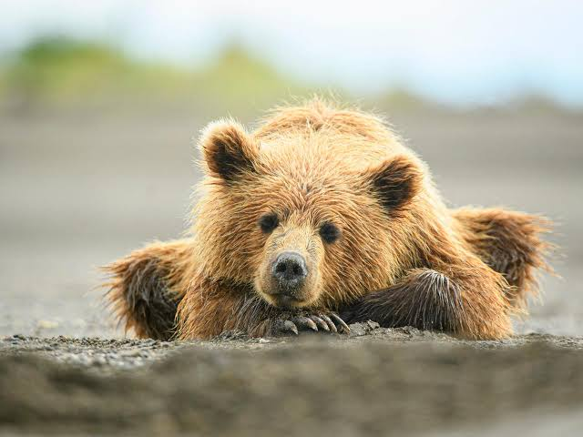

Zoo Animals
Bears

Bears are carnivoran mammals of the family Ursidae. They are classified as caniforms, or doglike carnivorans. Although only eight species of bears are extant, they are widespread, appearing in a wide variety of habitats throughout most of the Northern Hemisphere and partially in the Southern Hemisphere
Ollie
Mona
Bear Facts
Giraffes
The giraffe is a large African hoofed mammal belonging to the genus Giraffa. It is the tallest living terrestrial animal and the largest ruminant on Earth. Traditionally, giraffes have been thought of as one species, Giraffa camelopardalis, with nine subspecies.
Frankie
Coconut
Giraffe Facts
Lions

The lion is a large cat of the genus Panthera, native to Africa and India. It has a muscular, broad-chested body; a short, rounded head; round ears; and a hairy tuft at the end of its tail. It is sexually dimorphic; adult male lions are larger than females and have a prominent mane.
Mella
Karl
Lion Facts
Monkeys
Monkey is a common name that may refer to most mammals of the infraorder Simiiformes, also known as the simians. Traditionally, all animals in the group now known as simians are counted as monkeys except the apes.
Cookie
Earl
Banana Pudding
Monkey Facts
Alligators
An alligator, or colloquially gator, is a large reptile in the genus Alligator of the family Alligatoridae of the order Crocodilia. The two extant species are the American alligator and the Chinese alligator. Additionally, several extinct species of alligator are known from fossil remains.
Wren
Aspen
Mika
Alligator Facts